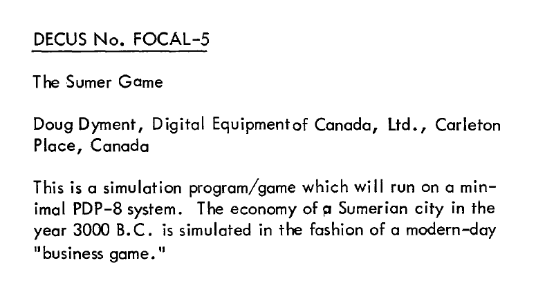

The Path to Hammurabi
SOMETHING GOES HERE
The Sumer Game (1969)
In March 1968, Canadian DEC employee Doug Dyment gave a talk on computers in education, after which a woman described to him in detail an interesting educational game she had come across, which was in fact The Sumerian Game. When Dyment returned from the conference, he decided to program the game as a demo.
Dyment did this in a language called FOCAL. FOCAL was an interactive interpreted programming language used on DEC PDP-series machines. The name is an acronym, alternately for Formulating On-line Calculations in Algebraic Language or, more simply, FOrmula CALculator. If you're curious you can take a look at a FOCAL programming guide from that time.
Dyment required his game to run in the smallest possible FOCAL memory configuration of four kilobytes. To achieve that, Dyment had to scale down The Sumerian Game by focusing on just the first phase or segment of the game, which focused on harvesting and storing grain to manage population growth. The narrative elements, in particular, were pretty much entirely removed, which left just a focus on the resource management aspects. An example of what you might see as far as gameplay:
Not being knowledgeable about Sumerian history, Dyment decided to change the king in the game to the more famous Babylonian ruler Hammurabi, though he misspelled the name as "Hamurabi" in the game text, as you can see above. As Dyment described it:
The final program, as listed, was the largest piece of FOCAL-8 code that could fit in a 4K machine: there was literally not room for a single extra character. If there had been, I would likely have found some way to add functionality (like give 'Hamurabi' another 'm')!
It seems likely the mis-spelling was just that: a mis-spelling. The resource constraints, however, were very real. Dyment expanded on this idea:
The whole point was to squeeze as much functionality into a 4K computer as possible, and I used every short cut and programming trick I could think of to do so.
This game appeared in the DECUS Program Library Catalog as early as November 1969 under the title The Sumer Game:
DECUS was the DEC Users' Society. This was an independent computer user group related to Digital Equipment Corporation (DEC) and was focused on users of DEC hardware and software.
King of Sumeria (1970)
The game appeared under its proper name, King of Sumeria, in DEC's FOCAL-8 Demonstration Programs in July 1970, which was distributed to colleges.
Here is an example of the FOCAL listing:
You can also see a ham.fcl, a transcribed version of the FOCAL source. This particular transcription is based on on a listing in volume 2 of "Programming Languages" published in 1970.
There is also a notice of the program that made the rounds:
That notice was a Lexington High School Handout which, as can be seen was from September of 1969.
This game would be discovered by a student named Jim Storer, which will come up in a bit. It would then also be discovered by David Ahl.
Pollution / King (1970)
At some point Jim Storer discovered Dyment's "Hamurabi" on the system. Storer then created his own variant of The Sumerian Game called Pollution, later to become a variant called King. We have notice of the submission of the game to DECUS:
Further information was in a "Pollute" article from Call a Computer:

We even have a check stub showing the sale of the game to Call a Computer:
A scanned source code listing for the program is avaialable. You can also see a version of the king.bas BASIC source.
Hammurabi
In 1961, David Hollerith Ahl matriculated to the Graduate School of Industrial Administration at Carnegie-Mellon, where he wrote portions of The Carnegie-Tech Management Game and helped port it from machine language to FORTRAN.
In 1970, Ahl was an educational psychology PhD candidate and had taken a job with DEC managing their educational marketing department. Ahl spearheaded DEC's move into education by developing the EduSystem bundles largely responsible for bringing PDP-8 machines into the high school setting. Ahl also became one of the company's lone champions of BASIC and made sure the language would run on PDP systems alongside DEC's preferred FOCAL.
One of Ahl's initiatives was to start a free dedicated newsletter for educational users, which he called EDU. Ahl took his first step toward becoming one of the key individuals in the dissemination of many of the first iconic computer games. Each issue also included several program listings in BASIC, the language DEC was increasingly standardizing as the basis of its educational platforms, for users to type into their mainframes and run. But this meant Ahl needed to write or round up a large number of interesting BASIC programs in short order.
Ahl had scoured the DECUS catalog and other existing collections of source code for good programs to list in EDU. Among others, he had found a reimplementation of the 1964 teaching experiment The Sumerian Game that had been ported to FOCAL by a fellow DEC employee, which was the Dyment version. Ahl ported the program again to BASIC, and gave it the six-letter title HMRABI. You can see the BASIC source.
This is the version of the game that most people would become familiar with as it was ported by Ahl to DEC BASIC in 1971 and published in 1973 in the book 101 BASIC Games. The game was later remade in Microsoft BASIC and was part of the 1978 book BASIC Computer Games.
Worth noting, perhaps, that in these versions Hamurabi is now correctly spelled Hammurabi.